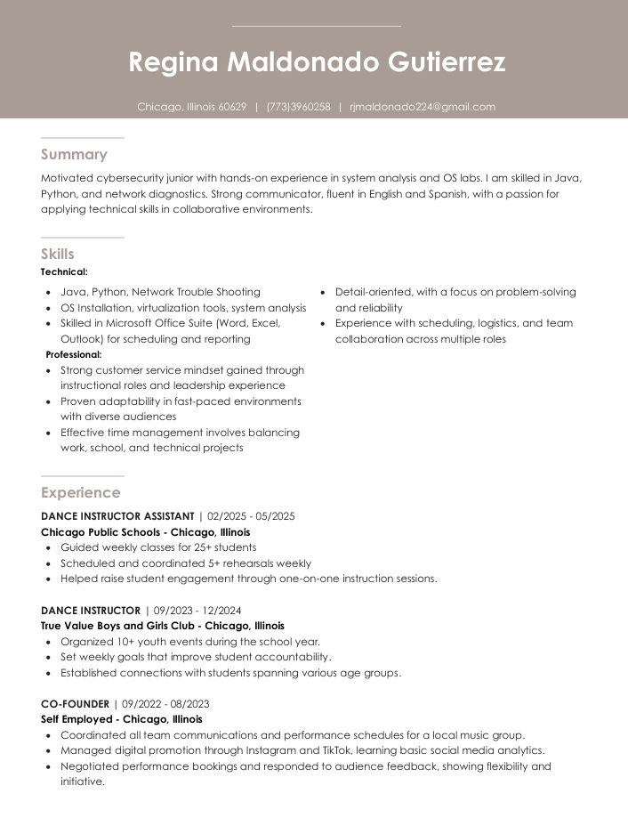
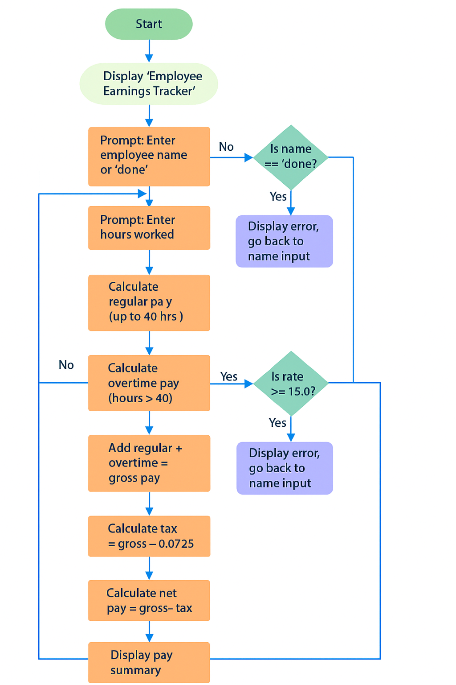
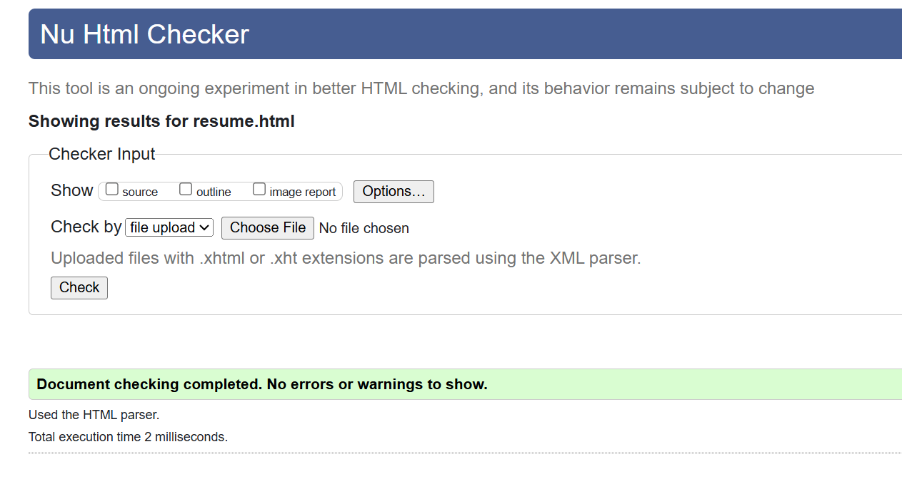

Regina Janice Maldonado Gutierrez
Education
- Illinois Institute of Technology – B.S. Applied Cybersecurity (Full Ride)
- Richard J. Daley College – A.S. Computer Science
Skills
- Linux troubleshooting & file system management
- Python scripting & validation
- Risk analysis & compliance documentation
Experience
- Peer Support & Technical Tutoring
- Collaborative Research Projects
- Workflow Documentation & Evidence Prep
Dance Background
- Trained in contemporary, hip-hop, and Latin styles
- Performed in college showcases and community events
- Choreographed routines blending rhythm and storytelling
- Dance taught me discipline, creativity, and confidence — qualities I bring to tech
Resume Snapshot
Project Flowchart
HTML Validation Proof
Audio Introduction
Listen to a brief audio introduction that highlights my background and career goals!